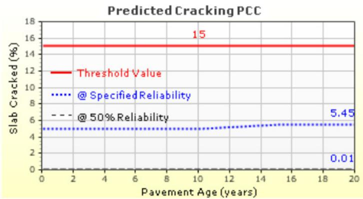
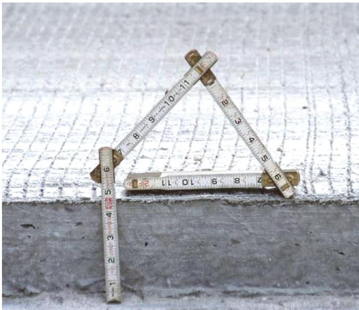
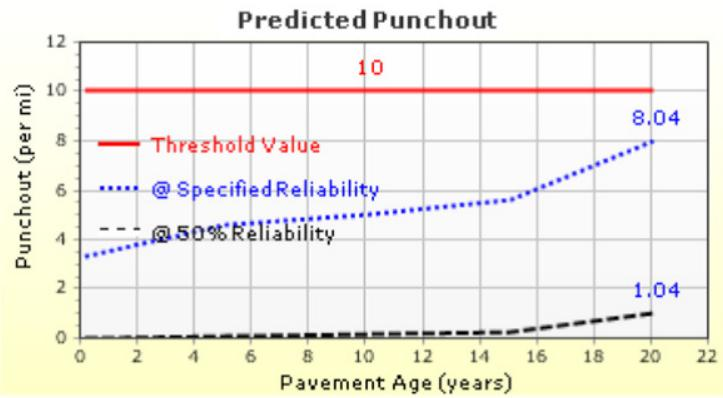
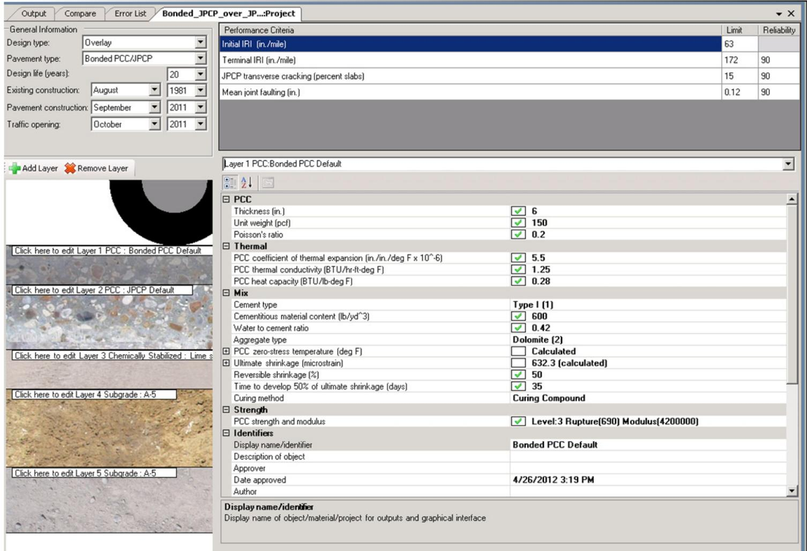
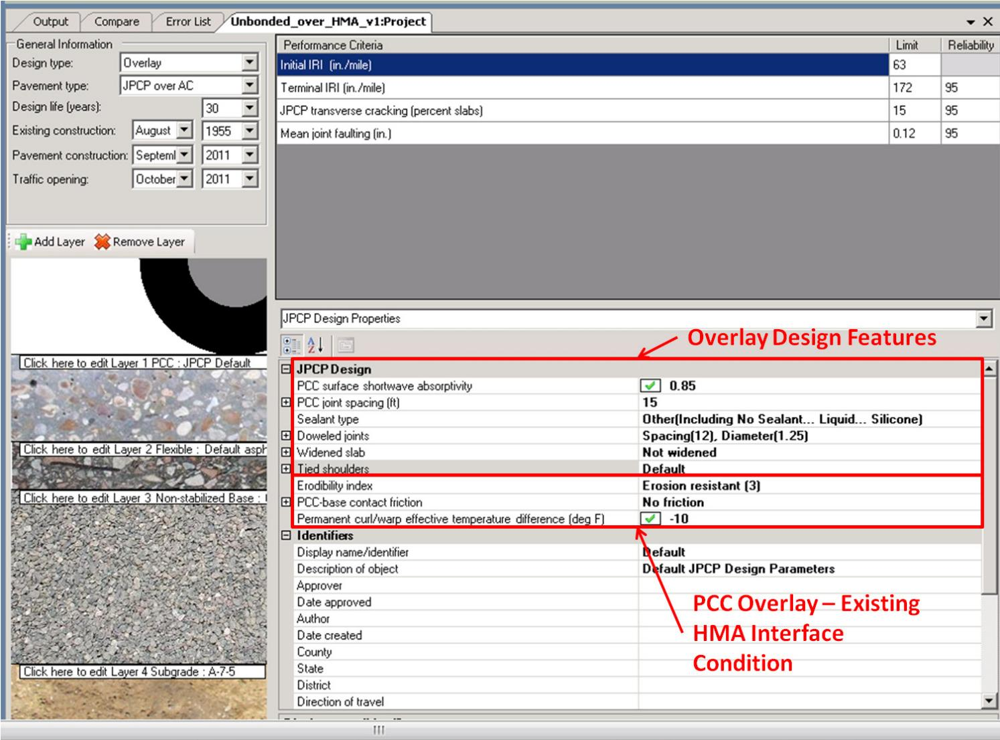
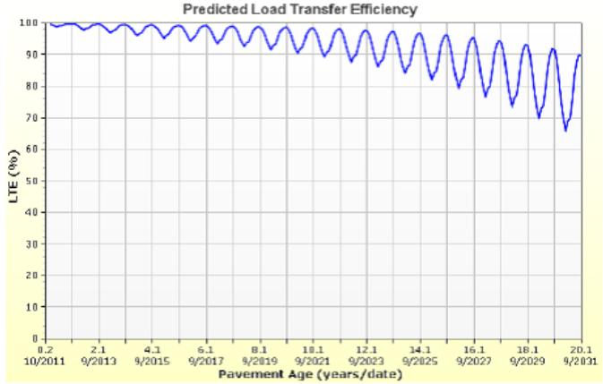

PCC Material Properties and Structural Design
The PCC Material Properties and Structural Design approach is a methodology for designing Portland‑cement concrete (PCC) overlays on existing concrete pavements—whether Jointed Plain Concrete Pavement or Continuously Reinforced Concrete Pavement—by defining the overlay’s thickness, general properties (unit weight, Poisson’s ratio), mix‑design variables, and thermal characteristics such as coefficient of thermal expansion [3]. Using these quantified inputs together with site‑specific climatic, subgrade and water‑table data entered into AASHTOWare Pavement ME Design, designers calculate the elastic modulus (≈4.8 million psi), flexural strength (650–680 psi), and zero‑stress temperature to predict tensile stresses, evaluate cracking risk, and verify that the combined pavement‑overlay thickness of at least six inches will meet required load‑bearing capacity under traffic loading [1][3]. The method thereby integrates stiffness, strength, and thermal parameters—modulus of elasticity, modulus of rupture, CTE—and structural constraints such as joint spacing and dowel reinforcement to produce an overlay that resists cracking while maintaining structural performance throughout the anticipated service life [1][3].
Sources (4)
Purpose and design objectives
The design methodology is intended to supply a concrete overlay that reliably resists cracking and maintains required structural capacity under traffic loading and site‑specific climatic and thermal conditions. By incorporating stiffness parameters such as the modulus of elasticity, strength characteristics like modulus of rupture, and thermal properties including coefficient of thermal expansion, designers can predict tensile stresses, evaluate zero‑stress temperature, and verify that the proposed thickness will deliver sufficient load‑bearing performance while minimizing premature distress. [1][3]
The following figure illustrates the predicted cracking performance of a 9.0-inch unbonded overlay under these design conditions.

Predicted Cracking PCC plot showing slab cracking percentage over pavement age. [3]The figure displays a graph titled “Predicted Cracking PCC” plotting the percentage of slab cracked against pavement age in years, featuring a horizontal threshold value line and curves representing reliability predictions.
[1] — Ch. 6 (p. 167); [3] — 1. Introduction (pp. 27–39)
Scope and applicability
The PCC Material Properties and Structural Design approach is appropriate for Portland‑cement concrete (PCC) overlay projects placed over existing concrete pavements—whether the existing deck is Jointed Plain Concrete Pavement (JPCP) or Continuously Reinforced Concrete Pavement (CRCP). It is suited to bonded overlays where coefficient of thermal expansion (CTE) effects are significant, and it requires that the combined thickness of the existing structure plus the new overlay meet a minimum of six inches for JPCP analysis. The method also presumes that the climate, subgrade and water‑table conditions at the site are known; typical examples include locations such as Peoria, Illinois or Atlanta, Georgia where the average water table is about six feet below ground. Material inputs are based on conventional PCC properties—Poisson’s ratio ≈0.20, unit weight ≈150 pcf, CTE around 4.5–5.5 ×10⁻⁶/°F—and on project‑specific mix designs that specify Type I cement (≈500–600 lb/yd³), a water‑to‑cement ratio near 0.42, limestone aggregate, and strength parameters such as modulus of elasticity in the 4.2–4.8 million psi range and modulus of rupture/flexural strength about 650 psi. Consequently, the approach is suitable for standard overlay thicknesses (typically 2–9 in.), conventional joint spacings, dowel configurations, and any situation where accurate climatic data can be incorporated through AASHTOWare Pavement ME Design. [3]
The following figure illustrates a typical application of this method for a bonded concrete overlay with a thickness of 4.5 inches.

A folded tape measure used to demonstrate the thickness of a bonded concrete overlay. [3]The image displays a folded metal tape measure positioned against a vertical edge of a concrete slab, visually indicating the depth of the material layer. This visual representation corresponds to bonded concrete overlays that commonly range between 2 and 6 in. in thickness.
[3] — 1. Introduction (pp. 27–67)
If the total thickness of the existing pavement plus the concrete overlay is less than six inches, AASHTOWare Pavement ME Design cannot be applied and a different design method should be employed. The software explicitly limits analysis to a minimum combined thickness of six inches, so projects with thinner sections must use an alternative approach. [3]
The following figure illustrates the AASHTOWare Pavement ME Design software referenced in this context.
 AASHTOWare Pavement ME Design software interface displaying PCC material properties and structural design parameters. [3]
AASHTOWare Pavement ME Design software interface displaying PCC material properties and structural design parameters. [3]
The figure displays the AASHTOWare Pavement ME Design user interface, specifically showing a project setup for a bonded concrete overlay on an existing pavement structure. Visible input fields include specific PCC material properties such as thickness, unit weight, Poisson’s ratio, and thermal characteristics like the coefficient of thermal expansion.
[3] — 1. Introduction (p. 39)
Design inputs and requirements
Design inputs for a Portland‑cement concrete overlay, per the AASHTOWare Pavement ME methodology, require: (1) precise site identification – e.g., “Location: near Fort Worth, Texas.”; “Location: Kansas City, Missouri.”; “Location: Peoria, Illinois.”; “Location: Atlanta, Georgia.” – together with the annual average water‑table depth for each site (“Annual average water table depth: 10 ft.”; “12 ft.”; “6 ft.”). (2) concrete material properties that are consistent across the examples: a modulus of elasticity of 4,800,000 psi (“E (psi) for concrete: 4,800,000.” or “Elastic modulus, E (psi) for concrete: 4,800,000.”), a 28‑day flexural strength ranging from 650 to 680 psi (“28‑day flexural strength (psi): 680.”; “28‑day flexural strength (psi): 650.”), and a coefficient of thermal expansion in the range 4.5–5.5 × 10⁻⁶/°F. Where joint design is addressed, spacing values are provided (12 ft in Kansas City, 15 ft in Atlanta). The excerpts do not supply traffic volumes or additional environmental conditions; those inputs must be obtained elsewhere for a complete design. [3]
The following figure illustrates the interface for entering these concrete material details within the ACPA BCOA Thickness Designer.
 Screen capture of the ACPA BCOA Thickness Designer web application showing input fields for concrete material properties. [3]
Screen capture of the ACPA BCOA Thickness Designer web application showing input fields for concrete material properties. [3]
The figure displays a software interface titled “ACPA BCOA Thickness Designer” used to calculate bonded concrete overlay on asphalt (BCOA) thickness. Visible input fields include Average 28-Day Flexural Strength, Concrete Modulus of Elasticity, and Coefficient of Thermal Expansion. The source context specifies that for this example, the average 28-day flexural strength is 650 psi, concrete modulus of elasticity is 3,500,000 psi, and CTE is 5.5.
[3] — 1. Introduction (pp. 35–64)
Design of Portland‑cement concrete (PCC) overlays is governed by a combination of ASTM test methods, AASHTO specifications, and the performance criteria embedded in the AASHTOWare Pavement ME Design framework. Material properties must be verified according to the testing specifications: ASTM C469 for static modulus of elasticity and ASTM C215 for dynamic modulus measurements (‘Testing specifications: ASTM C469 (dynamic modulus: ASTM C215).’). The modulus of elasticity is a primary input for structural analysis and crack‑risk modeling (‘Modulus of elasticity is used in structural design of concrete pavement and for modeling the risk of cracking in concrete pavement.’). Poisson’s ratio is assumed to be about 0.20 for hardened concrete (‘Poisson’s ratio is normally about 0.2 in hardened concrete.’; ‘Poisson’s ratio (0.20) and unit weight (150 pcf )’).
Thermal properties are controlled by AASHTO TP 60, Standard Test Method for the Coefficient of Thermal Expansion of Hydraulic Cement Concrete (‘AASHTO TP 60, Standard Test Method for the Coefficient of Thermal Expansion of Hydraulic Cement Concrete’), with a newer procedure, AASHTO T 336, adopted to address earlier limitations (‘a new procedure, AASHTO T 336, was developed to rectify those problems’). Default thermal values in the design tool are CTE ≈4.5–5.5 ×10⁻⁶/°F (example CTE 4.5 ×10⁻⁶/°F; default CTE 5.5 ×10⁻⁶/°F).
The guides prescribe performance requirements: elastic modulus E = 4,800,000 psi (‘E (psi) for concrete: 4,800,000.’; ‘Elastic modulus, E (psi) for concrete: 4,800,000.’) and a 28‑day flexural strength (modulus of rupture) between 650 and 680 psi (‘28-day flexural strength (psi): 680.’; ‘28-day flexural strength (psi): 650.’; ‘modulus of rupture of 650 psi’). Mix design parameters—cement type (Type I), cementitious content (550–600 lb/yd³), water‑to‑cement ratio (0.42), and limestone aggregate—are identified as critical design variables (‘These include cement type and content, water/cement ratio, and aggregate type.’; ‘cement type (Type I) and content (600 lb/yd3 ), water/ cement ratio (0.42), and aggregate type (limestone)’).
Structural constraints imposed by the AASHTOWare tool require a minimum combined pavement‑overlay thickness of 6 in (‘AASHTOWare Pavement ME Design is currently limited to the analysis of a minimum combined thickness for the existing pavement and the overlay of 6 in.’), joint spacing limited to 12–15 ft, dowel bars 1.25 in diameter spaced at 12 in, and tied PCC shoulders. Site‑specific constraints such as water‑table conditions also bound the design; for example, an annual average water table depth of six feet is noted for Atlanta, Georgia (‘Location: Atlanta, Georgia.’; ‘Annual average water table depth: 6 ft.’). [1][3]
[1] — Ch. 6 (p. 167); [3] — 1. Introduction (pp. 27–64)
Design methods and criteria
The PCC overlay design requires that each concrete layer be defined by its general properties (thickness, unit weight, Poisson’s ratio), thermal properties—especially a laboratory‑determined coefficient of thermal expansion (CTE) using AASHTO TP 60 or the newer T 336 method—and mix specifications such as cement type, water‑cement ratio and aggregate. The design assumes a zero‑stress temperature threshold that represents the temperature at which the concrete hardens sufficiently to develop tensile stresses. Strength properties are critical design variables in the AASHTO Pavement ME Design Guide; these include modulus of elasticity and modulus of rupture for JPCP and CRCP overlay design. Moreover, the analysis is limited to projects where the combined existing pavement and overlay thickness is at least 6 in., establishing a minimum thickness requirement. No explicit factor of safety or reliability requirement is stated in the provided excerpts. [3]
[3] — 1. Introduction (pp. 27–67)
Structural section and dimensions
The design requires the concrete overlay (slab) thickness to be entered for each trial. Reported examples include a 2 in. slab for an initial trial and a 9.0 in. slab for another first‑trial configuration; other excerpts cite 8 in. and 8.5 in., but the guidance also states that the combined thickness of existing pavement plus overlay must be at least 6 in. The existing concrete pavement thickness is entered separately, with an example value of 10 in. No dimensions are prescribed for base, subbase, treated‑soil, shoulders, or edge supports. Reinforcement details are limited to dowel bars that are 1.25 in. in diameter on 12 in. centers, and concrete joints are spaced every 15 ft. [3]
[3] — 1. Introduction (pp. 39–67)
Materials and mixture design
The PCC overlay design must define a complete set of material inputs grouped into general, thermal, mix‑design and strength categories. General properties include the layer thickness, unit weight (approximately 150 pcf), and Poisson’s ratio (~0.20). The structural analysis requires an elastic modulus that reflects concrete strength and aggregate characteristics; the guides note that “Concrete’s modulus of elasticity generally correlates with the strength of the concrete and the type and amount of the aggregate.” Flexural performance is captured by the average 28‑day flexural strength, while thermal response uses a coefficient of thermal expansion in the range of 4.5–5.5 ×10⁻⁶ /°F. Mix design specifications call for Type I Portland cement with a cementitious content around 500‑600 lb/yd³, a water‑to‑cement ratio of about 0.42, and limestone aggregate, as expressed in the statement “cement type (Type I) and content (600 lb/yd3 ), water/ cement ratio (0.42), and aggregate type (limestone).” Field quality control must record temperature, air entrainment, slump and flow‑table consistency; for example, air content is reported as a percentage (“Air Content (ahd.): 5.7%”). Together these quantified inputs feed the AASHTOWare Pavement ME structural analysis and crack‑risk modeling. [1][2][3][4]
The following figure illustrates the predicted punchout performance resulting from these material inputs within the AASHTOWare Pavement ME design framework.

Predicted Punchout Plot for an Unbonded CRCP Overlay. [3]The figure displays a plot of predicted punchouts per mile against pavement age, comparing the performance of an overlay design to a threshold value. By modeling the predicted distress for an 8.0 in. Unbonded CRCP Overlay, the chart demonstrates the application of these quantified inputs to verify that the pavement meets required performance criteria.
[1] — Ch. 6 (p. 167); [2] — Ch. 4 (p. 57); [3] — 1. Introduction (pp. 27–67); [4] — App. A (pp. 118–119)
The designer begins by entering the project‑specific mix inputs—cement type and dosage, water‑to‑cement ratio, limestone aggregate, layer thickness, unit weight, Poisson’s ratio, and thermal properties—into the Pavement Structure menu. “The following set of inputs is for mix properties, which are project specific and should be obtained from the concrete mix design and specifications.” General concrete defaults such as a Poisson’s ratio of 0.20 and a unit weight of 150 pcf are applied, while the coefficient of thermal expansion (CTE) must be determined for the overlay (and existing pavement) because it governs bonded‑overlay performance; “The default values in AASHTOWare Pavement ME Design are recommended for all of these properties except for CTE. … Determining this value in the laboratory for both the overlay and the existing concrete pavement is recommended.” The mix proportions—typically Type I cement at 500‑600 lb/yd³, a water‑to‑cement ratio of 0.42, and limestone aggregate—are calibrated to achieve the target modulus of rupture (≈650–680 psi), which serves as the Level 3 strength input for structural design; “Strength properties are critical design variables in the AASHTO Pavement ME Design Guide. These properties include modulus of elasticity and modulus of rupture for JPCP and CRCP overlay design.” By matching these material properties to the required structural capacity, accounting for thermal expansion and shrinkage (durability), and selecting mix proportions that support reasonable construction timing and curing conditions (constructability), the resulting concrete overlay satisfies all performance requirements. [3]
The following figure illustrates the interface where these project-specific mix inputs are entered into the Pavement Structure menu.

Screen capture of the AASHTOWare Pavement ME Design interface displaying material properties for a bonded PCC overlay. [3]Visible parameters include general properties such as thickness and unit weight, thermal characteristics like CTE, mix design variables including cement type and water-to-cement ratio, and strength inputs for modulus of rupture. The interface allows the designer to define “general (PCC), thermal, mix, shrinkage, and strength properties” which are critical for calculating tensile stresses and verifying structural capacity in concrete overlays.
[3] — 1. Introduction (pp. 27–67)
Structural details and interfaces
The overlay design calls for transverse joints spaced at fifteen feet, with load‑transfer dowel bars provided. Dowel reinforcement shall consist of one‑and‑quarter inch diameter bars placed on a twelve‑inch spacing. The new concrete is tied into the existing PCC shoulders to provide load transfer and continuity across the structure. In some sections the joint spacing is noted as 12 ft, though no additional reinforcement or connection details are given for that configuration. [3]
The following figure illustrates the input interface used to define these jointed plain concrete pavement properties within the AASHTOWare Pavement ME Design software.

Screen Capture of AASHTOWare Pavement ME Design JPCP Design Properties Menu. [3]The figure displays the “JPCP Design Properties” menu within a software interface, showing specific input fields for overlay design features such as joint spacing and dowel bar dimensions. The menu also allows for the selection of erodibility index and other parameters required to calculate structural performance.
[3] — 1. Introduction (pp. 47–64)
In the Wichita, Kansas overlay example the PCC slab is designed with a modulus of elasticity of 4,800,000 psi and a 28‑day flexural strength of 650 psi; joints are placed at 15‑ft intervals and transverse dowels sized 1.25 in are installed on 12‑in centers to provide load transfer across slab edges, thereby defining the interface between the concrete overlay, underlying pavement layers, and adjacent features. [3]
The following figure illustrates the predicted load transfer efficiency for this overlay configuration.

Predicted Load Transfer Efficiency over Pavement Age for an Unbonded CRCP Overlay. [3]This visualization represents the predicted crack load transfer efficiency for an unbonded CRCP overlay, which is one of the specific performance predictions generated by AASHTOWare Pavement ME Design to evaluate structural integrity.
[3] — 1. Introduction (p. 53)
Drainage, environment, and accessibility
Design of PCC overlays integrates drainage, moisture, climate, and other environmental conditions by requiring engineers to input site‑specific climatic data and groundwater information into AASHTOWare Pavement ME Design. The program “AASHTOWare Pavement ME Design allows users to load climatic information (air temperature, solar radiation, wind, humidity) from an extensive database of cities across the U.S.” or to interpolate values from nearby weather stations, ensuring that local temperature cycles and moisture regimes are represented in the analysis. In addition, “The designer also enters the seasonal or constant water table depth for the project location,” which is used throughout the structural calculations to evaluate drainage effects on the overlay. Thermal behavior of the concrete is treated as a critical design variable; “Thermal properties include CTE, thermal conductivity, and heat capacity,” and a zero‑stress temperature—entered directly or estimated from the construction month—is applied to model seasonal temperature stresses that influence cracking. When groundwater conditions are known, such as an “Annual average water table depth: 6 ft.” for a given site, these values further refine the assessment of moisture exposure and drainage performance. By embedding these climate‑related inputs and moisture parameters into material property selection and structural analysis, the design process explicitly accounts for environmental influences on PCC overlay durability and serviceability. [3]
[3] — 1. Introduction (pp. 27–58)
References
- Integrated Materials and Construction Practices for Concrete Pavement: A State-of-the-Practice Manual (2nd edition IMCP Manual, 2019) [link]
- Guide to Full-Depth Reclamation (FDR) with Cement (2017, reprinted 2019) [link]
- Guide to the Design of Concrete Overlays Using Existing Methodologies (2012) [link]
- Testing Guide for Implementing Concrete Paving Quality Control Procedures (2008) [link]